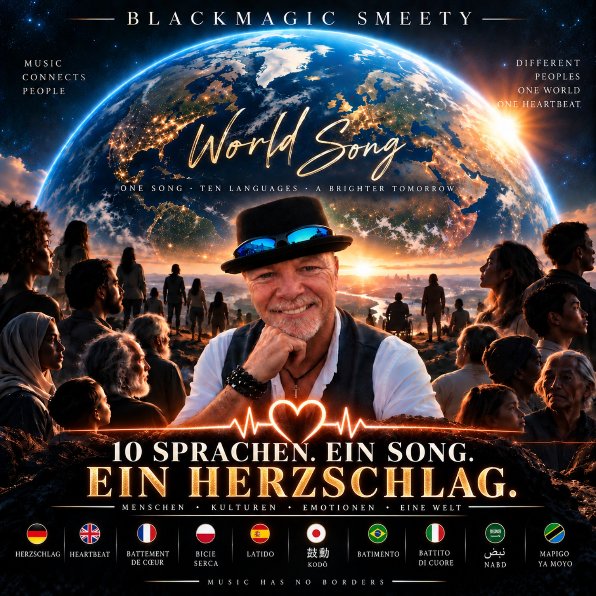
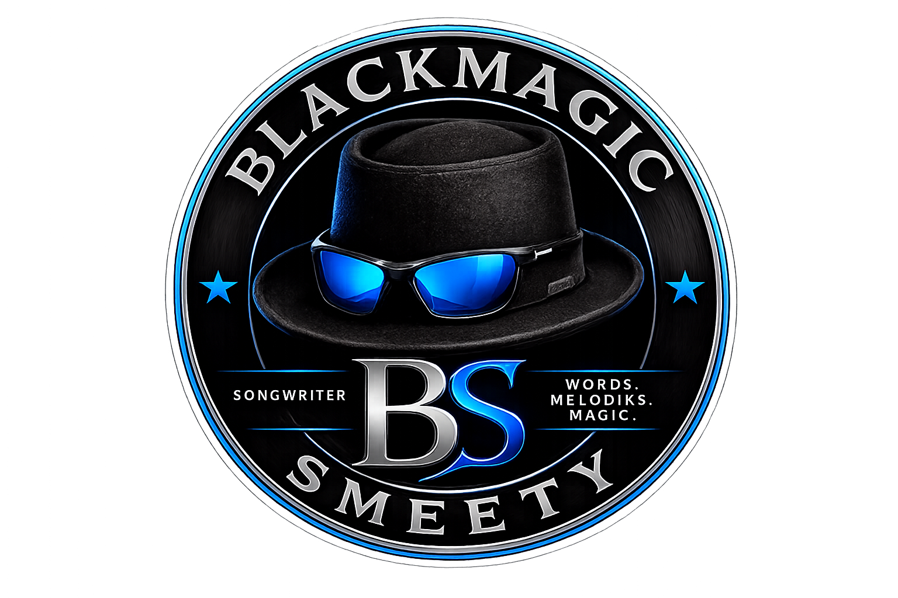
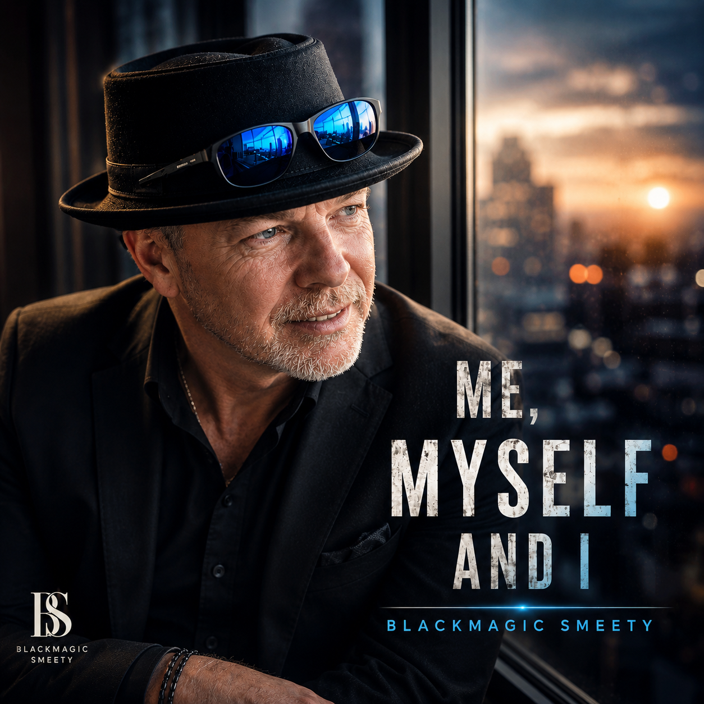
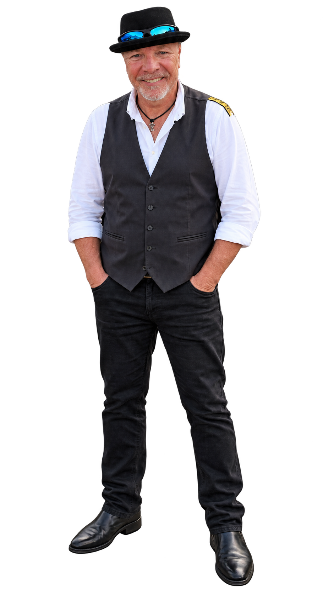

SPECIAL PROJECT · 2026
THE WORLD SONG
10 Sprachen. Ein Song. Ein Herzschlag.
Eine musikalische Reise über Sprachen, Länder und Kulturen hinweg – mit zehn eigenständigen Sprachversionen.

BLACKMAGIC SMEETY
OFFIZIELLE HOMEPAGE
Songwriter mit Herz & Beat
Songs mit Geschichte. Persönlich geschrieben.
Digital zum Leben erweckt.
MEINE MUSIK
Alle Songs von Blackmagic Smeety – übersichtlich gesammelt. Die Bibliothek ist für viele weitere Titel vorbereitet.
BLACKMAGIC SMEETY
Besondere Ideen bekommen hier ihren eigenen Raum – ohne die Hauptnavigation zu überladen.

10 Sprachen. Ein Song. Ein Herzschlag.
Eine musikalische Reise über Sprachen, Länder und Kulturen hinweg – mit zehn eigenständigen Sprachversionen.

Softrock · Ballad


Deutsch + English · Cinematic Pop-Rock
10 Sprachen. Ein Song. Ein Herzschlag.
Ein gemeinsamer musikalischer Gedanke – erzählt in zehn Sprachen. Klicke auf ein Cover und höre die jeweilige Version direkt bei Suno.
SOFTROCK · BALLAD
What else is waiting inside of me?
▶ AUF SUNO ANHÖREN ↗One more day. One more fight.
Looking for a place where everything feels right.
So many faces. So many eyes.
Still trying to calm the storm inside.
Stand up. Take a breath.
Life keeps moving with every step.
Sometimes hidden. Sometimes free.
Still wondering what is waiting inside of me.
What else is waiting inside of me?
More than these eyes have ever seen.
More than the fear. More than the pain.
One more step. One more dream.
More than the person I thought I'd be.
What else is waiting inside of me?
More than these eyes have ever seen.
More than the fear. More than the pain.
One more step. One more dream.
There's still a world waiting inside of me.
CINEMATIC POP-ROCK · POWER BALLAD
Zwei Sprachfassungen eines gemeinsamen Songgedankens über Zeit, Bewusstsein und den Wert des Lebens.
Wir beginnen zu leben
Bevor wir wissen, was Leben bedeutet
Wir folgen jedem Augenblick
Ohne zu fragen, wohin er uns führt
Irgendwo auf unserem Weg
Verlieren wir die Fragen, die wir stellen sollten
Und die Jahre ziehen vorbei
Während wir noch lernen, wer wir sind
Dann kommt dieser eine Tag
An dem wir plötzlich anders sehen
Wir blicken zurück und erkennen Dinge
Die wir vorher niemals sahen
Und fragen uns, wer wir heute wären
Hätten wir damals schon gewusst, was wir heute wissen
Doch bleibt uns noch genug Zeit
Den Weg vor uns zu verändern?
Solange wir noch hier sind
Ist das Morgen noch nicht geschrieben
Vielleicht beginnt genau mit dieser Erkenntnis
Der Respekt vor dem Leben
Leben, ich wusste nie
Was du von mir verlangt hast
Heute weiß ich
Wir sind nur für eine Weile hier
Vielleicht bedeutet jeder Atemzug mehr
Wenn wir wissen, dass nichts für immer bleibt
Solange wir hier sind
Lasst uns lernen, was es heißt, wirklich zu leben
Zu erkennen, was uns entgangen ist
Zeigt uns noch nicht, wohin wir gehen sollen
Klarheit kann uns finden
Während die Antworten weiter im Verborgenen liegen
Wir können die Vergangenheit nicht neu schreiben
Doch aus jeder ihrer Seiten lernen
Und alles, was sie uns gelehrt hat
In jeden neuen Tag mitnehmen
Vielleicht bedeutet Älterwerden nicht
Dass wir unsere Zeit verlieren
Vielleicht lernen wir erst mit den Jahren
Was diese Zeit wirklich wert ist
Jedes Leben verdient Respekt
Jede Geschichte hinterlässt eine Spur
Und solange unsere Geschichte weitergeht
Können wir entscheiden, was als Nächstes kommt
Leben, ich wusste nie
Was du von mir verlangt hast
Heute weiß ich
Wir sind nur für eine Weile hier
Vielleicht bedeutet jeder Atemzug mehr
Wenn wir wissen, dass nichts für immer bleibt
Solange wir hier sind
Lasst uns lernen, was es heißt, wirklich zu leben.
We start to live before we know what living means
We follow every moment, never asking where it leads
Somewhere along the way, we lose the questions we should ask
And years go by while we're still learning who we are
Then one day, something changes in the way we see it all
We look behind us, seeing things we never saw before
And wonder who we'd be, if we had known what we know now
But is there still enough time to change the road ahead?
As long as we're still here, tomorrow isn't written yet
Maybe knowing that is where respect for life begins
Life, I never knew what you were asking of me
Now I know we're only here for a while
Maybe every breath means more when we know it won't last forever
So while we're here, let's learn what it means to truly live
Knowing what we missed doesn't show us where to go
Clarity can find us, while the answers still remain unclear
We can't rewrite the past, but we can learn from every page
And carry what it taught us into every day ahead
Maybe growing older isn't losing time
But learning what it's worth
Every life deserves respect
Every story leaves a trace
And while our story's still unfolding
We can choose what comes next
Life, I never knew what you were asking of me
Now I know we're only here for a while
Maybe every breath means more when we know it won't last forever
So while we're here, let's learn what it means to truly live
MODERN R&B · ELECTRO-POP · ATMOSPHERIC SYNTH-POP
Summer nights. Attraction. Energy.
Summer nights body close to mine
bassline shaking while we lose our minds
fairground air and your perfume
one look from you got me feeling seventeen
Cold drinks melting in our hands
heartbeat racing every time we dance
Your lips so close like a dangerous sign
whole room fading when your eyes hit mine
No sleep no rules just your body next to mine
losing all control tonight…
Your touch feels dangerous but I still want more
whole room shaking when you hit the floor
Fire in your eyes got me out my mind
heartbeat going reckless every single night
Like the world stopped when you moved closer
no way to fight it when your body takes over
Dangerous… dangerous…
fire in your eyes…
Late night roads windows open wide
singing way too loud while the city passes by
Your hand on my neck while the bassline drops
one look from you like the whole world stops…
No sleep no rules just your body next to mine
losing all control tonight…
Your touch feels dangerous but I still want more
whole room shaking when you hit the floor
Fire in your eyes got me out my mind
heartbeat going reckless every single night
Like the world stopped when you moved closer
no way to fight it when your body takes over
Too close too hot and I don’t wanna stop
Bass loud your touch got me losing all my thoughts
One look one move and I’m falling into you
Your touch feels dangerous but I still want more
whole room shaking when you hit the floor
Fire in your eyes got me out my mind
heartbeat going reckless every single night
Like the world stopped when you moved closer
no way to fight it when your body takes over
Fire in your eyes… fire in your eyes…
Summer nights still stuck in my mind
One touch one move still lost in you…

DARK SYNTHPOP · DARK POP · CINEMATIC ROCKWAVE
Dreams · desire · reality
Silence gets louder when you’re in my head…
You’re the thought I shouldn’t follow…
I close my eyes… and there you are again…
It started with a touch too small to leave a scar
but somehow I still feel it every time the room goes dark
Your eyes stayed on me longer than they should
now every dream rewrites what really happened
I wake up in the middle of the night
hearing things you never said
and somewhere between guilt and desire
you keep crawling through my head
Every night gets harder to tell what’s real or not
I keep losing pieces of myself inside these thoughts
I know where this is leading I feel it in my chest
but every time I try to run you pull me deeper in
Some dreams feel too real to leave behind
Pull me deeper into your silence tonight
Don’t wake me if this is wrong
You feel more real when the world goes dark
Closer… closer inside my mind
Closer… every night, every time
Some dreams feel too real… too real to leave behind
Now your shadow follows every silent room
even strangers in the daylight start looking like you
I read our last conversation like a forbidden prayer
finding hidden meanings that were never really there
And I hate the way I need this the way it keeps me awake
cause somewhere in these sleepless nights I crossed a line I can’t erase
Sometimes I swear I feel you right beside my skin
and that’s the moment I realize how far this dream has been
Every night gets harder to tell what’s real or not
I keep losing pieces of myself inside these thoughts
I know where this is leading I feel it in my chest
but every time I try to run you pull me deeper in
Some dreams feel too real to leave behind
Pull me deeper into your silence tonight
Don’t wake me if this is wrong
You feel more real when the world goes dark
Closer… closer inside my mind
Closer… every night, every time
Some dreams feel too real… too real to leave behind
Maybe I stopped fighting long before tonight
maybe part of me was waiting to disappear inside your eyes
And it scares me how alive I feel every time you cross my mind
like something dark and beautiful I was never meant to find
I should let this fade away before it pulls me under
but your name still sounds like heaven inside my darkest hours
And somewhere between guilt and longing I lost who I was before
cause every dream keeps opening a door I can’t ignore
Some dreams feel too real to leave behind
Pull me deeper into your silence tonight
Don’t wake me if this is wrong
You feel more real when the world goes dark
Closer… closer to the edge this time
Closer… like you’re breathing through my mind
Some dreams feel too real to fade away
And every night you pull me further from the light
Don’t wake me… don’t let this die
Cause you feel more real than reality tonight
Don’t wake me… if this is wrong…
You still feel real… when the room goes dark…
Some dreams… some dreams feel too real…
Too real… to leave behind…
BLACKMAGIC ARCHIV
Releases, persönliche Songs, Demos, Experimente und Fundstücke bekommen hier ihren Platz.

DER MENSCH HINTER DEN SONGS
Ich schreibe Songs mit Herz, Beat und Ehrlichkeit. Musik für echte Momente.
Im Mittelpunkt stehen Gedanken, Erinnerungen und Geschichten aus dem Leben. Ich bin Songwriter, nicht Sänger. KI und Suno nutze ich als kreatives Werkzeug, um meine Texte und musikalischen Vorstellungen hörbar zu machen.
Genregrenzen sind zweitrangig. Entscheidend ist, dass ein Song etwas auslöst und glaubwürdig bleibt.
HÖREN & ENTDECKEN
Meine veröffentlichten Songs findest du auf den großen Musikplattformen.
GÄSTEBUCH
Welcher Song hat dich erreicht? Welche Geschichte verbindest du damit? Deine Nachricht geht direkt per E-Mail an Blackmagic Smeety und wird nicht öffentlich angezeigt.